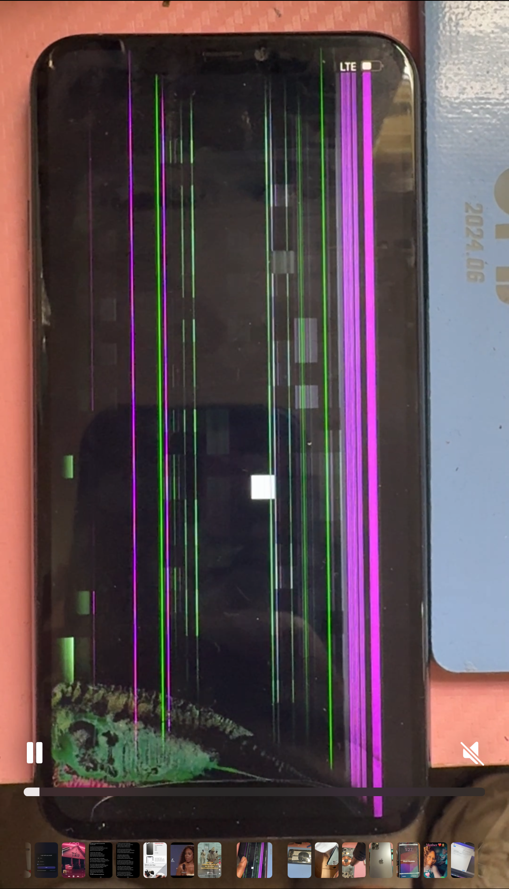
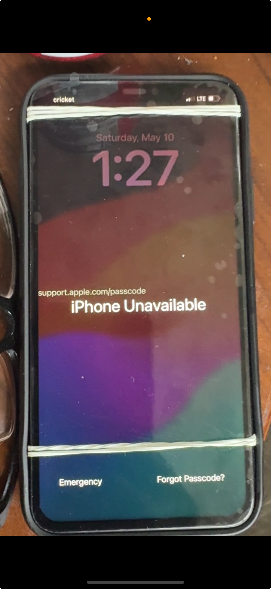
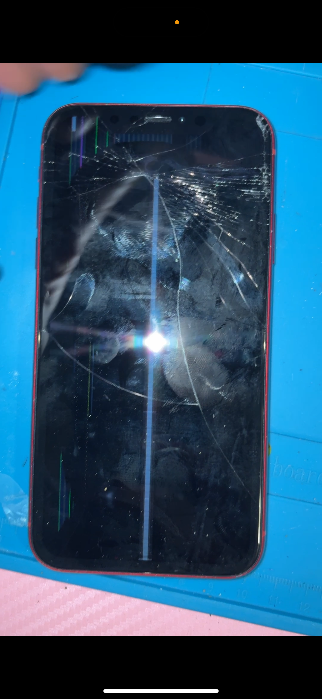
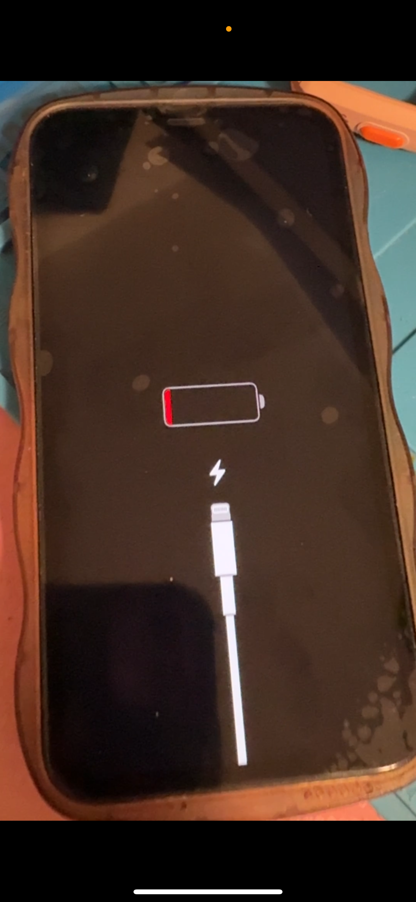
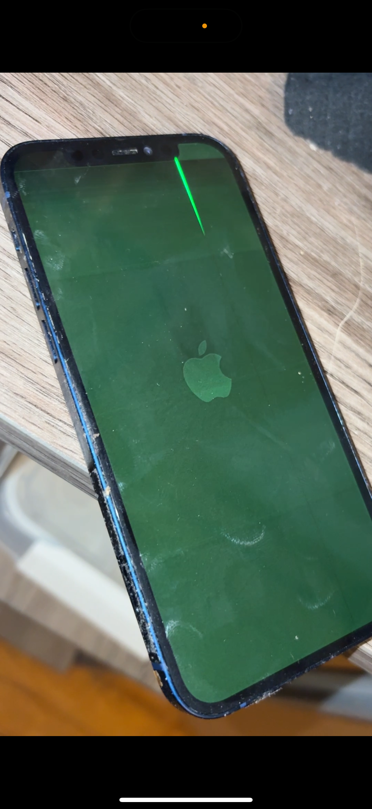

iPhone 11 Pro Max Screen — Before & After

Galaxy S21 Back Glass — Before & After


iPad Pro - Before & After


iPhone 13 Mini - Screen Saved 💅


Nintendo Switch - Back in Action 🎮


Samsung A53 - Crystal Clean 🔧